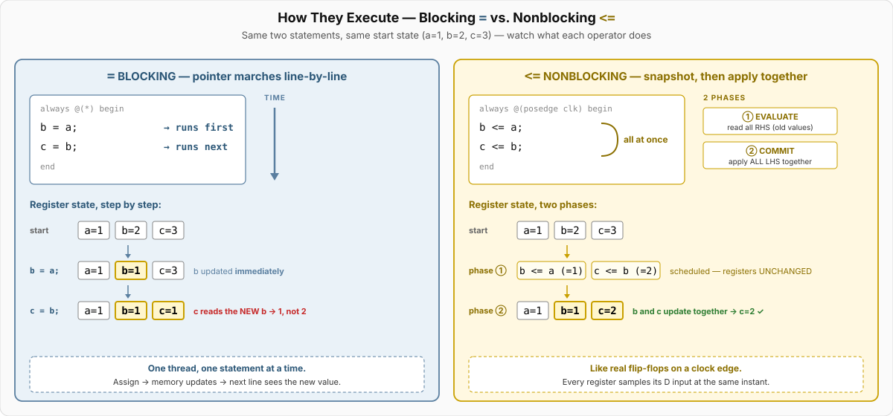
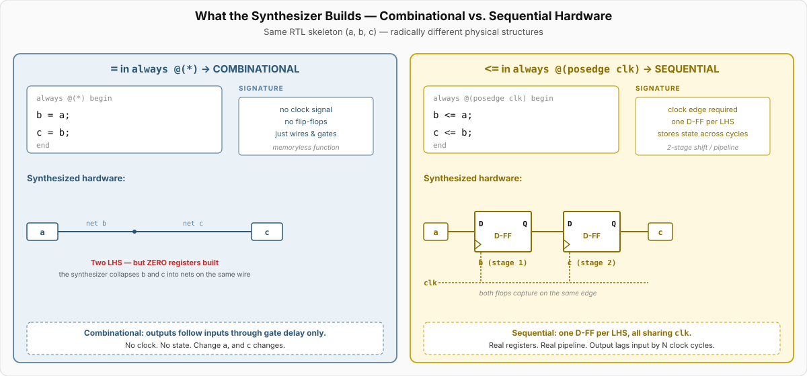

Video 2 of 4 · ~12 minutes
Dr. Mike Borowczak · Electrical & Computer Engineering · CECS · UCF
Nonblocking assignment is the basis of every synchronous pipeline in existence — every CPU, every networking switch, every GPU. Cliff Cummings's 2000 paper “Nonblocking Assignments in Verilog Synthesis” is the reference, cited in nearly every corporate coding guideline. Lint rules everywhere enforce: = only in combinational blocks, <= only in sequential blocks.
Topic 5 shift registers live or die by <=. Topic 7 FSM state transitions demand <=. Your Topic 11 UART framing pipeline is 6 <= deep. Yesterday you used = in the ALU's always @(*); today you meet its sequential counterpart and learn why mixing them is the most expensive bug in RTL.
“<= is just assignment. Maybe with a slight delay? The variables get their new values as the lines execute.”
<= is not assignment at all — it's scheduling. Each <= line says “at the end of this timestep, please update the LHS to this value.” All the RHS expressions are evaluated using pre-edge values. Only after the whole block finishes do the updates apply — all at once, atomically.
= Blocking — Combinational realmEvaluate RHS, assign to LHS, immediately. Next statement in the block sees the updated value.
Use in: always @(*) — combinational
Builds: wires, gates, muxes, LUTs. No flip-flops.
Mental model: ordinary programming assignment.
<= Nonblocking — Sequential realmEvaluate all RHS using current values, schedule the updates, apply them simultaneously at end of timestep.
Use in: always @(posedge clk) — sequential
Builds: one D flip-flop per LHS, all sharing clk.
Mental model: all flip-flops capture at once, like real silicon.
= in always @(*) (combinational). <= in always @(posedge clk) (sequential). Never mix.
Step 1: On the clock edge, evaluate all RHS expressions using current (pre-edge) values.
Step 2: Schedule all updates. Nothing has changed yet.
Step 3: Apply all scheduled updates simultaneously at the end of the timestep.
Blocking is a pointer walking down statements. Nonblocking is a snapshot followed by a simultaneous commit. This is what the simulator does.

// WRONG: blocking
always @(posedge clk) begin
b = a; // b gets a immediately
c = b; // c gets the NEW b (= a!)
end
// Result: b=a, c=a — no pipeline at all// CORRECT: nonblocking
always @(posedge clk) begin
b <= a; // scheduled: b ← a(current)
c <= b; // scheduled: c ← b(current)
end
// Result: b=a(old), c=b(old) — proper 2-stage pipelineTwo operators, two physical regimes. Combinational = wires, gates, no clock. Sequential = D flip-flops on a clock edge.

Given a toggles 1,0,1,0,1,… each cycle. Starting values: b=c=0. Trace b, c for 4 edges using nonblocking:
always @(posedge clk) begin
b <= a;
c <= b;
endcycle 1: a=1 → b=1, c=0
cycle 2: a=0 → b=0, c=1
cycle 3: a=1 → b=1, c=0
cycle 4: a=0 → b=0, c=1
Notice: c is a delayed by 2 cycles. That's the pipeline signature.
b=a, then c=b=a every cycle — c matches a with zero delay. Pipeline collapsed.
Initial values: a=1, b=2, c=3. After one clock edge, predict a, b, c:
always @(posedge clk) begin
a <= b;
b <= c;
c <= a;
enda=2, b=3, c=1. All RHS evaluated first: a's new value = b(old) = 2, b's new = c(old) = 3, c's new = a(old) = 1. All applied simultaneously. This is a 3-element rotator.
=: a=b=2. b=c=3. c=a=2 (a was just updated!). Final: a=2, b=3, c=2. Rotator becomes garbage.
~5 minutes
▸ COMMANDS
cd lecture_examples/week1_day04/d04_s2_ex1/
# shift_blocking.v + shift_nonblocking.v
make sim # both DUTs in one testbench
make stat-blocking # SB_DFF: 1
make stat-nonblocking # SB_DFF: 3
make wave # GTKWave on the .vcd▸ EXPECTED STDOUT
Cycle 1: blocking a=1 b=1 c=1 | nb a=1 b=0 c=0
Cycle 2: blocking a=0 b=0 c=0 | nb a=0 b=1 c=0
Cycle 3: blocking a=0 b=0 c=0 | nb a=0 b=0 c=1
Cycle 4: blocking a=0 b=0 c=0 | nb a=0 b=0 c=0
PASS: blocking collapses (c=1 on cycle 1)
PASS: nonblocking pulse reached c on cycle 3
=== 5 passed, 0 failed ===▸ GTKWAVE
Two traces stacked. Blocking: a, b, c all change together on each edge (pipeline collapsed). Nonblocking: staircase pattern — a leads, b follows by 1, c follows by 2. This is the pipeline visible.
$ make stat # synth_ice40 -top shift_blocking
SB_DFF: 1 ← ONE flop
SB_LUT4: 0
(synthesizer proves r_a==r_b==o_q
and optimizes 3 → 1 flop.
Result: input → 1 flop → output)$ make stat # synth_ice40 -top shift_nonblocking
SB_DFF: 3 ← THREE flops
SB_LUT4: 0
(proper 3-stage pipeline:
i_d → r_a → r_b → o_q)Ask AI: “Explain, using the term 'active event queue', why nonblocking assignments prevent race conditions in sequential Verilog.”
TASK
Ask AI about simulator event queue semantics.
BEFORE
Predict: NBA events go to an NBA region that fires after the active region, ensuring atomic commit.
AFTER
Strong AI explains the active→NBA→inactive regions. Weak AI just says “it's delayed.”
TAKEAWAY
This is IEEE 1364 §5 material. The reference for anyone who wants deep scheduling knowledge.
= in always @(*) — combinational<= in always @(posedge clk) — sequential① <= evaluates all RHS first, then updates simultaneously.
② This models real flip-flop behavior — simultaneous capture.
③ = in sequential blocks destroys pipeline behavior.
④ The rule is absolute: = for @(*), <= for @(posedge).
🔗 Transfer
Video 3 of 4 · ~10 minutes
▸ WHY THIS MATTERS NEXT
The bare D-flop is rare in practice. Real designs have reset (to initialize state), enable (to conditionally update), and choices about synchronous vs asynchronous reset. Video 3 covers the patterns you'll see in 99% of production RTL.